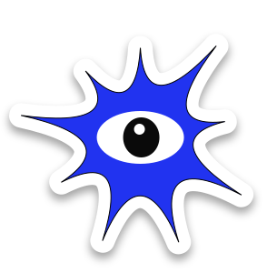

← anderson3x11.dev
Thomas C.
Journal de jeux
Backloggd ↗

Top 5
Les favoris de toujours
Journal
Du plus récent au plus ancien
/
Plus récents
Plus anciens
Mieux notés
Moins bien notés
Titre (A–Z)
Chargement…